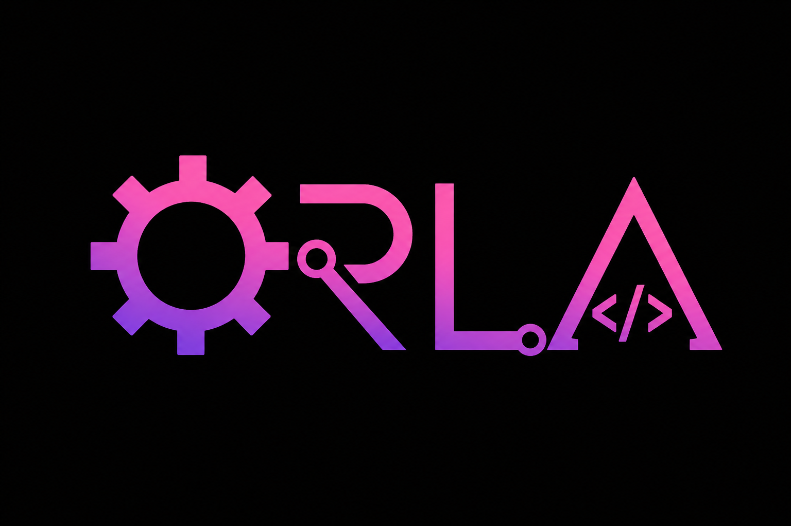

✦
01
صيانة الأجهزة
فحص وتشخيص وصيانة أعطال الأجهزة المختلفة، مع تحديد المشكلة قبل تنفيذ الإجراء المناسب.
عرض التفاصيل ←خدمات صيانة وتقنية للأجهزة والحسابات، بتشخيص واضح وتعامل مريح وخصوصية للسيدات.

من تشخيص الأعطال والصيانة إلى السوفتوير والحسابات والخدمات الرقمية.
فحص وتشخيص وصيانة أعطال الأجهزة المختلفة، مع تحديد المشكلة قبل تنفيذ الإجراء المناسب.
عرض التفاصيل ←تحديثات النظام، تهيئة الأجهزة، النسخ الاحتياطي، نقل البيانات وحل مشاكل البرامج.
مراجعة حالات حسابات Instagram المعطّلة أو الموقوفة ومشاكل الوصول والاستئناف.
الحالات التي نتعامل معها ←مساعدة في مشاكل Apple Account وiCloud وFind My والاسترداد الرسمي مع إثبات الملكية عند الحاجة.
توفير أجهزة وقطع إلكترونية حسب الطلب، بالإضافة إلى المساعدة في فحص الأجهزة المستعملة.
بيئة مريحة وخصوصية للسيدات، والخدمات مقدّمة من فنية صيانة.
بنبدأ بالتشخيص، وبنحدد سبب المشكلة والإجراء المناسب قبل الصيانة.
نوع الصيانة يعتمد على نتيجة الفحص وحالة الجهاز.
بنراجع حالة الحساب أولًا ونحدد مسار الاسترداد أو الاستئناف الرسمي المناسب حسب نوع المشكلة.
* إمكانية الاسترجاع تعتمد على حالة الحساب ونتيجة مراجعة Instagram/Meta، لذلك لا يتم ضمان قبول أي طلب مسبقًا.
في ORLA بنهتم بخصوصية جهازك وبياناتك وبطريقة التعامل من لحظة استلام الجهاز وحتى تسليمه.
تواصل معنا على صفحات ORLA وابعت تفاصيل المشكلة، وبنساعدك بتحديد الخطوة المناسبة.